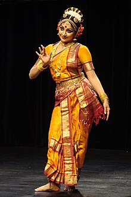

Kuchipudi, a pre-eminent Indian classical dance form counted among ten leading classical dance forms of India, is a dance-drama performance art that originated in a village of Krishna district of Andhra Pradesh, India. Similar to all leading Indian classical dance forms, Kuchipudi too evolved as a religious art rooting back to the age-old Hindu Sanskrit text ‘Natya Shastra’ and connects traditionally with temples, spiritual faiths and travelling bards. This ancient dance form finds place in the 10th century copper inscriptions and in 15th century texts like ‘Machupalli Kaifat’. Traditionally it is regarded that the sanyassin of Advaita Vedanta sect, Tirtha Narayana Yati, and his disciple Siddhendra Yogi initiated, methodized and arranged the present day version of the dance form in 17th century. Usually performance repertoire of Kuchipudi that is broadly oriented on Lord Krishna and the tradition of Vaishnavism include an invocation, dharavu – short dance, nritta – pure dance and nritya – expressive dance respectively.
